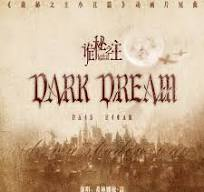

Praise The Fool

Composer: Official/p>
Theme: A tribute to the Fool Pathway and Klein Moretti's journey
Description: An epic composition celebrating the protagonist's growth and the mysterious nature of the Fool Tarot card. The song captures the essence of deception, power, and destiny woven throughout the narrative.
Listen On: YouTube
The Fool

Composer: Official
Theme: The enigmatic presence of the Fool Tarot
Description: A mystical and atmospheric piece that embodies the mysterious and otherworldly qualities of the Fool card. It is an official promotional release created specifically to celebrate the birthday of Klein Moretti.
Listen On: Bilibili
Song of the Fool

Composer: Fan-created
Theme: The song directly inspired by the novel's title
Description: A hauntingly beautiful melody that weaves together elements of mystery, intrigue, and the supernatural. This piece serves as an auditory representation of Klein's adventures across multiple identities and worlds.
Listen On: YouTube
Lord of Mysteries

Composer: Official
Theme: The supreme identity - the ultimate form
Description: An majestic and powerful composition that resonates with the grand scale and cosmic importance of the Lord of Mysteries. This anthem captures the gravity, power, and transcendence associated with the highest entities in the novel's world.
Listen On: YouTube
Dark Dream

Composer: Official
Theme: The mysterious and haunting depths of the LOTM universe
Description: A dark and immersive composition that delves into the shadowy aspects of the world of Lord of the Mysteries Volume 1: Clown. This haunting melody captures the enigmatic atmosphere of dreams, secrets, and hidden truths that permeate the story.
Listen On: Spotify